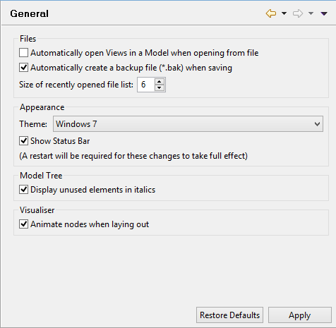

Préférences générales
Ouverture automatique des vues dans un modèle quand celui est ouvert depuis un fichier
Quand on ouvre un modèle depuis un fichier, choisir d'ouvrir automatiquement ou non toutes les vues dans le modèle.
Créer automatiquement un fichier de sauvegarde (*.bak) lors de l'enregistrement
Si ceci est coché, à chaque fois qu'un fichier .archimate est enregistré, une copie de sauvegarde avec une extension .bak sera créée d'abord.
Taille de la liste des fichiers récemment ouverts
Définit la taille mise en cache de la liste des fichiers récemment ouverts dans le menu "Fichiers->Ouverts récemment". Peut-être définie de 3 à 15.
Thème
Choisit le thème à utiliser pour l'application. Un redémarrage sera demandé pour que les changements prennent effet.
Afficher la barre d'état
Affiche ou masque la barre d'état. Un redémarrage sera nécessaire pour que les modifications soient prises en compte.
Affiche les éléments inutilisés en italique
Quand ceci est coché, tous les éléments ou les relations qui ne sont pas utilisés dans les vues sont affichés à l'aide d'une police de caractères en italique.
Animer les noeuds lors de la disposition
Quand ceci est coché, les noeuds dans la fenêtre du visualisateur sont animés lorsqu'ils sont placés pour la première fois et quand le bouton "Mise en page" est cliqué.